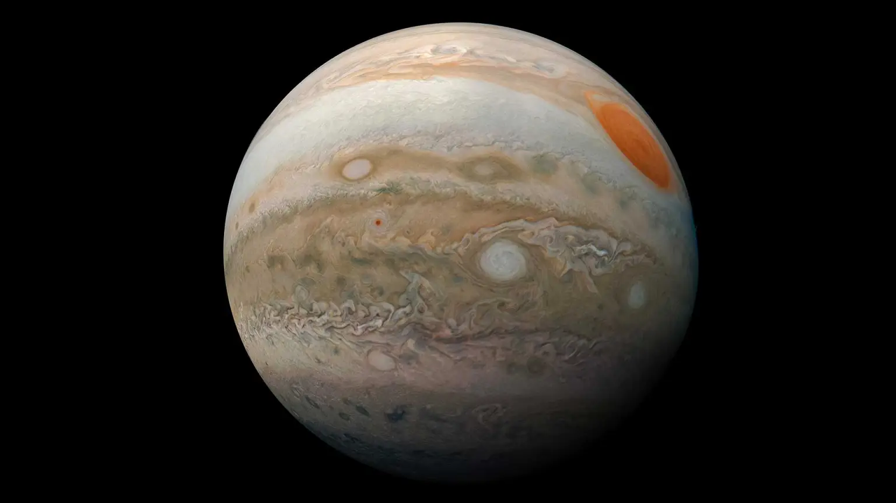

Jupiter is the fifth planet from our Sun and is, by far, the largest planet in the solar system – more than twice as massive as all the other planets combined. Jupiter's stripes and swirls are actually cold, windy clouds of ammonia and water, floating in an atmosphere of hydrogen and helium. Jupiter’s iconic Great Red Spot is a giant storm bigger than Earth that has raged for hundreds of years. Jupiter is surrounded by dozens of moons. Jupiter also has several rings, but unlike the famous rings of Saturn, Jupiter’s rings are very faint and made of dust, not ice. Jupiter has the shortest day in the solar system.
One day on Jupiter takes only about 10 hours (the time it takes for Jupiter to rotate or spin around once), and Jupiter makes a complete orbit around the Sun (a year in Jovian time) in about 12 Earth years (4,333 Earth days). Its equator is tilted with respect to its orbital path around the Sun by just 3 degrees. This means Jupiter spins nearly upright and does not have seasons as extreme as other planets do. Jupiter took shape when the rest of the solar system formed about 4.5 billion years ago, when gravity pulled swirling gas and dust in to become this gas giant. Jupiter took most of the mass left over after the formation of the Sun, ending up with more than twice the combined material of the other bodies in the solar system. In fact, Jupiter has the same ingredients as a star, but it did not grow massive enough to ignite.